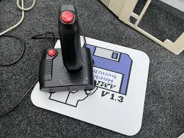

Interactive Sprites: Joystick Control
Moving a sprite automatically is cool, but letting the user control it is what makes a game! This tutorial builds on our animation example by adding joystick support. We'll read input from the joystick port to move our sprite around the screen and use the fire button to trigger a simple explosion effect.
How the Amiga Reads Joysticks
The Amiga reads the state of the standard joystick (connected to Port 1) through one of its custom chips, the CIA (Complex Interface Adapter). Specifically, we read from a register often labelled `JOY0DAT` at address `$DFF00A`. This register gives us a snapshot of the joystick's direction and button states.
We'll read this register during our vertical blank interrupt. This creates a responsive "game loop" where we check for input and update the sprite's position 50 times per second (on a PAL Amiga).

The "Explosion" Effect
How do we make the sprite "explode"? In this example, we'll use a simple but effective trick. We will define two different sets of sprite data: one for the normal ship and another that looks like a burst or explosion. When the fire button is pressed, our interrupt code will simply point the hardware to the explosion sprite data instead of the ship data. This instantly changes the sprite's appearance on screen.
The Complete Code (joystick_sprite.asm):
;-----------------------------------------------------
; Joystick Controlled Sprite with Explosion
; - Moves with joystick in Port 1
; - "Explodes" on fire button press
;-----------------------------------------------------
CUSTOM equ $DFF000
INTENA equ CUSTOM+$9A
INTREQ equ CUSTOM+$9C
DMACON equ CUSTOM+$96
SPR0PTH equ CUSTOM+$120
SPR0POS equ CUSTOM+$140
SPR0CTL equ CUSTOM+$142
SPRCOLOR17 equ CUSTOM+$1A2
SPRCOLOR18 equ CUSTOM+$1A4
SPRCOLOR19 equ CUSTOM+$1A6
JOY0DAT equ $DFF00A ; Joystick 1 Data
CIAAPRA equ $BFE001 ; CIA Port A (for fire button)
EXEC_BASE equ $4
LVL3_INT_VECTOR equ $6C
start:
lea CUSTOM,a5
move.l EXEC_BASE,a6
move.l LVL3_INT_VECTOR(a6),old_int_vector(pc)
move.w #$C000,INTENA(a5)
.waitvb:
move.w $DFF005,d0
btst #8,d0
beq.s .waitvb
lea vblank_interrupt(pc),a0
move.l a0,LVL3_INT_VECTOR(a6)
lea sprite_ship(pc),a0
move.l a0,SPR0PTH(a5)
move.w #$0f80,SPRCOLOR17(a5)
move.w #$0ff0,SPRCOLOR18(a5)
move.w #$0fff,SPRCOLOR19(a5)
move.w #$8100,DMACON(a5)
move.w #$C020,INTENA(a5)
forever_loop:
btst #6,CIAAPRA
bne.s forever_loop
exit:
move.w #$C020,INTENA(a5)
move.l old_int_vector(pc),LVL3_INT_VECTOR(a6)
move.w #$7FFF,DMACON(a5)
rts
vblank_interrupt:
movem.l d0-d2/a0-a1/a5,-(sp)
lea CUSTOM,a5
; --- Read Joystick ---
move.w JOY0DAT(a5),d0
move.w d0,d1
; Vertical Movement (Y-axis)
btst #0,d0
bne.s .no_down
addq.w #1,sprite_y(pc)
.no_down:
btst #1,d0
bne.s .no_up
subq.w #1,sprite_y(pc)
.no_up:
; Horizontal Movement (X-axis)
lsr.w #8,d1
btst #0,d1
bne.s .no_right
addq.w #1,sprite_x(pc)
.no_right:
btst #1,d1
bne.s .no_left
subq.w #1,sprite_x(pc)
.no_left:
; --- Check Fire Button ---
btst #6,CIAAPRA
bne.s .no_fire
lea sprite_explosion(pc),a0 ; Point to explosion data
move.l a0,SPR0PTH(a5)
bra.s .update_pos
.no_fire:
lea sprite_ship(pc),a0 ; Point back to ship data
move.l a0,SPR0PTH(a5)
.update_pos:
move.w sprite_y(pc),d1
move.w sprite_x(pc),d2
lsl.w #8,d1
add.b d2,d1
move.w d1,SPR0POS(a5)
move.w sprite_y(pc),d1
add.w #16,d1 ; Sprite height is 16 lines
lsl.w #8,d1
add.b d2,d1
move.w d1,SPR0CTL(a5)
move.w #$0020,INTREQ(a5)
move.w #$0020,INTREQ(a5)
movem.l (sp)+,d0-d2/a0-a1/a5
rte
; — Data Section —
old_int_vector: dc.l 0
sprite_x: dc.w $88
sprite_y: dc.w $64
sprite_ship:
dc.w $0000,$0000 ; First two words ignored, set by VBlank
dc.w $0180,$0180, dc.w $03C0,$03C0
dc.w $07E0,$07E0, dc.w $0FF0,$0FF0
dc.w $1FF8,$1FF8, dc.w $3FFC,$3FFC
dc.w $7FFE,$7FFE, dc.w $FFFF,$FFFF
dc.w $FFFF,$FFFF, dc.w $7FFE,$7FFE
dc.w $3FFC,$3FFC, dc.w $1FF8,$1FF8
dc.w $0FF0,$0FF0, dc.w $07E0,$07E0
dc.w $03C0,$03C0, dc.w $0180,$0180
dc.w $0000,$0000
sprite_explosion:
dc.w $0000,$0000 ; Ignored control words
dc.w $1008,$1008, dc.w $4892,$2442
dc.w $2442,$4892, dc.w $9004,$8221
dc.w $9004,$4118, dc.w $27C2,$4118
dc.w $13C8,$8221, dc.w $0FF0,$0FF0
dc.w $0FF0,$0FF0, dc.w $13C8,$8221
dc.w $27C2,$4118, dc.w $9004,$4118
dc.w $9004,$8221, dc.w $2442,$4892
dc.w $4892,$2442, dc.w $1008,$1008
dc.w $0000,$0000
How to Compile and Run on macOS
- Save the Code: Save the complete code above into a file named `joystick_sprite.asm`.
- Assemble: Open your Terminal, navigate to the folder where you saved the file, and run: `vasmm68k_mot -Fhunk -o joystick_sprite joystick_sprite.asm`
- Set up Emulator: Make sure your joystick is enabled in the emulator's input settings (usually for Port 1). Mount the folder containing your new `joystick_sprite` executable as a hard drive (e.g., `DH0:`).
- Run in Emulator: Boot into Workbench, open the Shell, and run your program by typing `joystick_sprite`.
- See the Result: You can now move the sprite with the joystick. Pressing the fire button will change it to an explosion pattern, and releasing it will change it back to the ship. Click the left mouse button to exit.